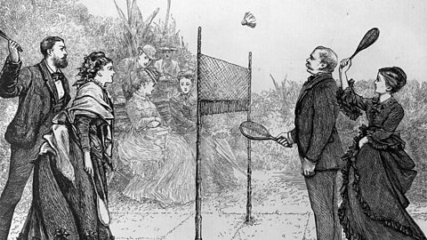
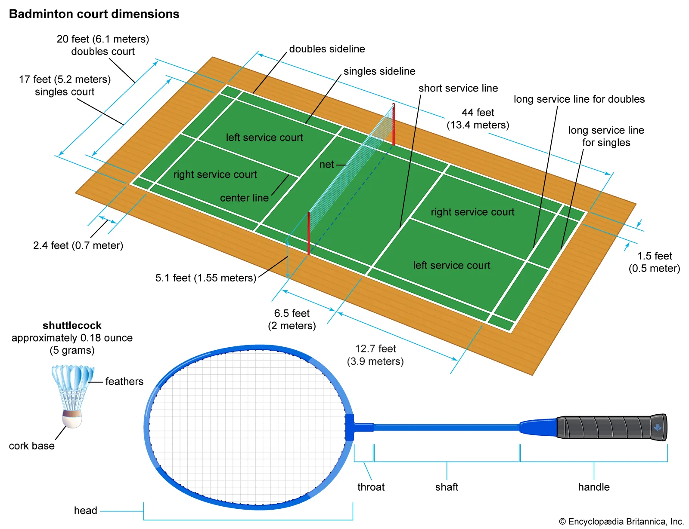

Ancient Origins
Games involving shuttlecocks have been played for centuries across Eurasia. The earliest known version was called "Ti Jian Zi" in China around the 5th century BC, where players kept a feathered shuttlecock in the air using their feet.
In Europe during the Middle Ages, a game called "battledore and shuttlecock" was popular, where players used simple paddles to keep the shuttlecock in the air as long as possible.
Development in British India
The modern version of badminton originated in the mid-19th century among British military officers stationed in British India. They added a net to the traditional battledore and shuttlecock game, creating "Poona" (named after the garrison town of Pune).
Returning officers brought the game back to England where it gained popularity among the upper classes. The Duke of Beaufort introduced the game at his country estate, Badminton House, in 1873, giving the sport its modern name.
Standardization and Global Spread
The Bath Badminton Club standardized the rules in 1877, which formed the basis for the modern game. The Badminton Association of England published the first official set of rules in 1893 and organized the first All England Open Badminton Championships in 1899.
Badminton spread globally through the British Empire, becoming particularly popular in Denmark, other European countries, and across Asia. The International Badminton Federation (now BWF) was founded in 1934 with nine member nations.
Olympic Recognition
Badminton debuted as a demonstration sport at the 1972 Munich Olympics and became an exhibition sport at the 1988 Seoul Olympics. It achieved full medal status at the 1992 Barcelona Olympics with singles and doubles events.
The sport's Olympic program was completed in 1996 with the addition of mixed doubles. Today, badminton is dominated by Asian countries, particularly China, Indonesia, and South Korea, though Denmark remains a European stronghold.